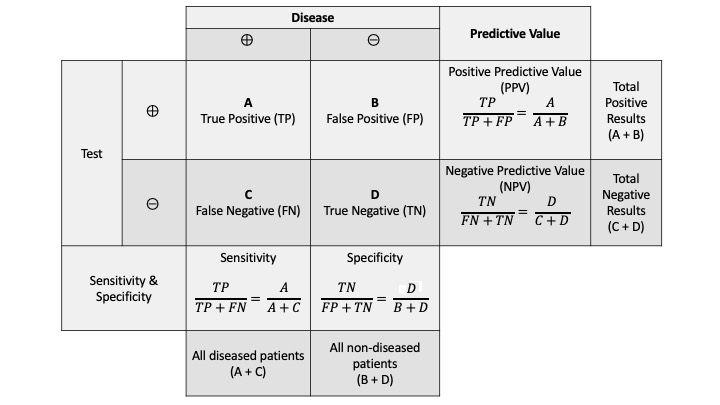

9 Conditional Probability
9.1 Objectives
Define and differentiate between conditional probability and joint probability, and provide real-world examples to illustrate these concepts and their differences.
Calculate conditional probabilities from given data or scenarios using their formal definition, and interpret these probabilities in the context of practical examples.
Using conditional probability, determine whether two events are independent and justify your conclusion with appropriate calculations and reasoning.
Apply Bayes’ Rule to solve problems both mathematically and through simulation usinng
R.
9.2 Conditional Probability
So far, we’ve covered the basic axioms of probability, the properties of events (set theory) and counting rules. Another important concept, perhaps one of the most important, is conditional probability. Often, we know a certain event or sequence of events has occurred and we are interested in the probability of another event.
Example:
Suppose you arrive at a rental car counter and they show you a list of available vehicles, and one is picked for you at random. The sample space in this experiment is \[ S=\{\mbox{red sedan}, \mbox{blue sedan}, \mbox{red truck}, \mbox{grey truck}, \mbox{grey SUV}, \mbox{black SUV}, \mbox{blue SUV}\}. \]What is the probability that a blue vehicle is selected, given a sedan was selected?
Since we know that a sedan was selected, our sample space has been reduced to just “red sedan” and “blue sedan”. The probability of selecting a blue vehicle out of this sample space is simply 1/2.
In set notation, let \(A\) be the event that a blue vehicle is selected. Let \(B\) be the event that a sedan is selected. We are looking for \(\mbox{P}(A \mbox{ given } B)\), which is also written as \(\mbox{P}(A|B)\). By definition, \[ \mbox{P}(A|B)=\frac{\mbox{P}(A \cap B)}{\mbox{P}(B)} \]
It is important to distinguish between the event \(A|B\) and \(A \cap B\). This is a common misunderstanding about probability. \(A \cap B\) is the event that an outcome was selected at random from the total sample space, and that outcome was contained in both \(A\) and \(B\). On the other hand, \(A|B\) assumes the \(B\) has occurred, and an outcome was drawn from the remaining sample space, and that outcome was contained in \(A\).
Another common misunderstanding involves the direction of conditional probability. Specifically, \(A|B\) is NOT the same event as \(B|A\). For example, consider a medical test for a disease. The probability that someone tests positive given they had the disease is different than the probability that someone has the disease given they tested positive. We will explore this example further in our Bayes’ Rule section.
9.3 Independence
Two events, \(A\) and \(B\), are said to be independent if the probability of one occurring does not change the probability of the other occurring. We looked at this idea in the last chapter, but now we have another way of thinking about it using conditional probabilities. For example, let’s say the probability that a randomly selected student has seen the latest superhero movie is 0.55. What if we randomly select a student and we see that he/she is wearing a black backpack? Does that probability change? Likely not, since movie attendance is probably not related to choice of backpack color. These two events are independent.
Mathematically, \(A\) and \(B\) are considered independent if and only if \[ \mbox{P}(A|B)=\mbox{P}(A) \]
Result: \(A\) and \(B\) are independent if and only if \[ \mbox{P}(A\cap B)=\mbox{P}(A)\mbox{P}(B) \]
This follows from the definition of conditional probability and from above: \[ \mbox{P}(A|B)=\frac{\mbox{P}(A\cap B)}{\mbox{P}(B)}=\mbox{P}(A) \]
Thus, \(\mbox{P}(A\cap B)=\mbox{P}(A)\mbox{P}(B)\).
Example:
Consider the rental car example from before. Recall events \(A\) and \(B\): let \(A\) be the event that a blue vehicle is selected and let \(B\) be the event that a sedan is selected. Are \(A\) and \(B\) independent?
No, events \(A\) and \(B\) are not independent. First, recall that \(\mbox{P}(A|B)=0.5\). The probability of selecting a blue vehicle (\(\mbox{P}(A)\)) is \(2/7\) (the number of blue vehicles in our sample space divided by 7, the total number vehicles in \(S\)). This value is different from 0.5; thus, \(A\) and \(B\) are not independent.
We could also use the result above to determine whether \(A\) and \(B\) are independent. Note that \(\mbox{P}(A)= 2/7\). Also, we know that \(\mbox{P}(B)=2/7\). So, \(\mbox{P}(A)\mbox{P}(B)=4/49\). But, \(\mbox{P}(A\cap B) = 1/7\), since there is just one blue sedan in the sample space. \(4/49\) is not equal to \(1/7\); thus, \(A\) and \(B\) are not independent.
9.4 Bayes’ Rule
As mentioned in the introduction to this section, \(\mbox{P}(A|B)\) is not the same quantity as \(\mbox{P}(B|A)\). However, if we are given information about \(A|B\) and \(B\), we can use Bayes’ Rule to find \(\mbox{P}(B|A)\). Let \(B_1, B_2, ..., B_n\) be mutually exclusive and exhaustive events and let \(\mbox{P}(A)>0\). Then, \[ \mbox{P}(B_k|A)=\frac{\mbox{P}(A|B_k)\mbox{P}(B_k)}{\sum_{i=1}^n \mbox{P}(A|B_i)\mbox{P}(B_i)} \]
Let’s use an example to dig into where this comes from.
Example:
Suppose a doctor has developed a blood test for a certain rare disease (only one out of every 10,000 people have this disease). After careful and extensive evaluation of this blood test, the doctor determined the test’s sensitivity and specificity.
Sensitivity is the probability of detecting the disease for those who actually have it. We can also write this as the probability of someone testing positive, given they actually have the disease. Note that this is a conditional probability.
Specificity is the probability of correctly identifying “no disease” for those who do not have it. Again, this is a conditional probability.
See Figure 9.1 for a visual representation of these terms and others related to what is termed a confusion matrix.
In fact, this test had a sensitivity of 100% and a specificity of 99.9%. Now suppose a patient walks in, the doctor administers the blood test, and it returns positive. What is the probability the patient actually has the disease?
This is a classic example of how probability could be misunderstood. Upon reading this question, you might guess that the answer to our question is quite high. After all, this is a nearly perfect test. After exploring the problem more in depth, we find a different result.
9.4.1 Approach using whole numbers
Without going directly to the formulaic expression above, let’s consider a collection of 100,000 randomly selected people. What do we know?
Based on the prevalence of this disease (one out of every 10,000 people have this disease), we know that 10 of them should have the disease.
This test is perfectly sensitive. Thus, of the 10 people that have the disease, all of them test positive.
This test has a specificity of 99.9%. Of the 99,990 that don’t have the disease, \(0.999*99990\approx 99890\) will test negative. The remaining 100 will test positive.
Thus, of our 100,000 randomly selected people, 110 will test positive. Of these 110, only 10 actually have the disease. Thus, the probability that someone has the disease given they’ve tested positive is actually around \(10/110 = 0.0909\).
9.4.2 Simulation
To do the simulation, we can think of it as flipping a coin. First let’s assume we are pulling 1,000,000 people from the population. The probability that any one person has the disease is 0.0001. We will use rflip() to get 1,000,000 people and designate them as “no disease” or “disease”.
set.seed(43)
results <- rflip(1000000, 0.0001, summarize = TRUE)
results n heads tails prob
1 1e+06 100 999900 1e-04In this case, 100 people had the disease (heads). Now, let’s find the positive test results. Of the 100 with the disease, all will test positive. Of those without disease, there is a 0.001 probability of testing positive.
rflip(as.numeric(results['tails']), prob = 0.001, summarize = TRUE) n heads tails prob
1 999900 959 998941 0.001Now, 959 of those without the disease tested positive. Thus, the probability of having the disease given a positive test result is approximately:
100 / (100 + 959) # number with disease divided by total number who tested positive[1] 0.094428719.4.3 Mathematical approach
Now let’s put this in context of Bayes’ Rule as stated above. First, let’s define some events. Let \(D\) be the event that someone has the disease. Thus, \(D'\) would be the event that someone does not have the disease. Similarly, let \(T\) be the event that someone has tested positive. What do we already know? \[ \mbox{P}(D) = 0.0001 \hspace{1cm} \mbox{P}(D')=0.9999 \] \[ \mbox{P}(T|D)= 1 \hspace{1cm} \mbox{P}(T'|D)=0 \] \[ \mbox{P}(T'|D')=0.999 \hspace{1cm} \mbox{P}(T|D') = 0.001 \]
We are looking for \(\mbox{P}(D|T)\), the probability that someone has the disease, given he/she has tested positive. By the definition of conditional probability, \[ \mbox{P}(D|T)=\frac{\mbox{P}(D \cap T)}{\mbox{P}(T)} \]
The numerator can be rewritten, again utilizing the definition of conditional probability: \(\mbox{P}(D\cap T)=\mbox{P}(T|D)\mbox{P}(D)\).
The denominator can be rewritten using the Law of Total Probability (discussed [here][Probability properties]) and then the definition of conditional probability: \(\mbox{P}(T)=\mbox{P}(T\cap D) + \mbox{P}(T \cap D') = \mbox{P}(T|D)\mbox{P}(D) + \mbox{P}(T|D')\mbox{P}(D')\). So, putting it all together, \[ \mbox{P}(D|T)=\frac{\mbox{P}(T|D)\mbox{P}(D)}{\mbox{P}(T|D)\mbox{P}(D) + \mbox{P}(T|D')\mbox{P}(D')} \]
Now we have stated our problem in the context of quantities we know: \[ \mbox{P}(D|T)=\frac{1\cdot 0.0001}{1\cdot 0.0001 + 0.001\cdot 0.9999} = 0.0909 \]
Note that in the original statement of Bayes’ Rule, we considered \(n\) partitions, \(B_1, B_2,...,B_n\). In this example, we only have two: \(D\) and \(D'\).